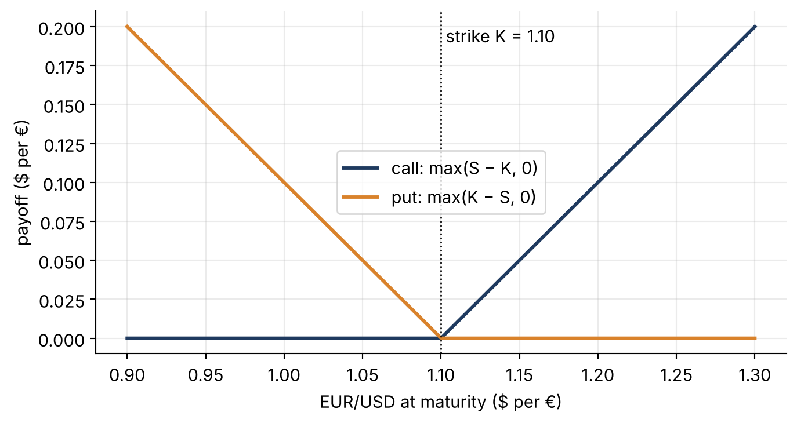
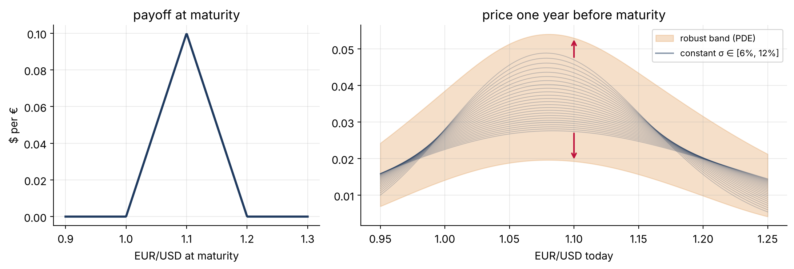

Pricing currency options when the model is uncertain
Part 3 · Two interest rates, one exchange rate, and an honest price range
FX options
uncertain volatility
robust pricing
A currency option from the ground up: the payoff, the Garman–Kohlhagen price, and what changes when volatility is only known to lie in a range.
Published
November 11, 2026
In Part 2 we priced bonds when the interest-rate model’s parameters were only known to lie in a box. Now we move to the application at the centre of my current project: currency (FX) options.
Step 1 · What is a currency option?
A US company will receive €1 million in a year. If the euro weakens, it loses money in dollar terms. It can protect itself with an FX option.
A call on EUR/USD with strike K gives the right, not the obligation, to buy €1 at K dollars at time T. If the exchange rate ends at S_T, the payoff is
\text{payoff} = \max(S_T - K,\ 0).
Show the code
S = np.linspace(0.9, 1.3, 400); K =1.10plt.plot(S, np.maximum(S - K, 0), color=NAVY, lw=2.2, label="call: max(S − K, 0)")plt.plot(S, np.maximum(K - S, 0), color=ORANGE, lw=2.2, label="put: max(K − S, 0)")plt.axvline(K, color="k", ls=":", lw=1); plt.text(K, .19, " strike K = 1.10")plt.xlabel("EUR/USD at maturity ($ per €)"); plt.ylabel("payoff ($ per €)"); plt.legend(); plt.show()

Figure 1: Payoffs at maturity, per €1: a call (right to buy euros at K = 1.10) and a put (right to sell). The option is worth exercising only on one side of the strike.
Step 2 · Why FX is different: two interest rates
Holding euros earns the euro interest rate r_f (foreign), while dollars earn the dollar rate r_d (domestic). A currency therefore behaves like a stock that pays a continuous dividend r_f. Under the pricing measure the exchange rate follows
Figure 2: Garman–Kohlhagen call prices one year before maturity for three volatilities (r_d = 4.5%, r_f = 2.5%). Higher volatility means a more valuable option, because the upside is unlimited while the downside is capped at zero.
Step 3 · Where my project starts
Garman–Kohlhagen assumes constant rates and volatility. Real FX markets violate both: volatility clusters and moves randomly, and both interest rates move. Classic work by Melino & Turnbull (1991) moved toward stochastic volatility for currency options. My project asks the next question: the volatility and rate dynamics themselves have uncertain parameters, so we model them with the nonlinear CIR family from Part 2 and look for price bounds.
To see the main effect clearly, this post isolates one ingredient: volatility known only to lie in a range\sigma \in [\underline\sigma, \overline\sigma], possibly changing over time. Here we use [6\%, 12\%].
Step 4 · Easy case: a plain call
The robust upper price is the supremum over all volatility paths in the band. By the same dynamic-programming argument as in Part 2, it solves a nonlinear PDE, the Black–Scholes–Barenblatt equation (Avellaneda, Levy & Parás 1995):
(for the lower price, swap the roles of \overline\sigma and \underline\sigma). Nature picks high volatility wherever the option is convex and low volatility wherever it is concave.
A call is convex everywhere, so the upper price is just Garman–Kohlhagen at \overline\sigma and the lower is GK at \underline\sigma. This is the same “corner” story as the bond in Part 2.
Figure 3: Robust bounds for the call (shaded, computed by the nonlinear PDE) line up exactly with Garman–Kohlhagen at the edges of the volatility band (dashed).
Step 5 · Interesting case: a butterfly spread
Now take a payoff that is convex in some places and concave in others. A butterfly (long a 1.00 call, short two 1.10 calls, long a 1.20 call) pays off if the euro ends up near 1.10. Exporters use structures like this when they expect a stable exchange rate.
For such a payoff nature’s worst choice of volatility switches with the state: high where the price is convex (the wings) and low where it is concave (near 1.10). No single constant volatility reproduces this.
Show the code
K1, K2, K3 =1.00, 1.10, 1.20fly =lambda s: np.maximum(s - K1, 0) -2* np.maximum(s - K2, 0) + np.maximum(s - K3, 0)fly_gk =lambda s, sig: gk_call(s, K1, T, rd, rf, sig) -2* gk_call(s, K2, T, rd, rf, sig) + gk_call(s, K3, T, rd, rf, sig)up, dn = bsb(fly, S0, T, rd, rf, slo, shi, True), bsb(fly, S0, T, rd, rf, slo, shi, False)const = np.array([fly_gk(S0, s) for s in np.linspace(slo, shi, 25)])fig, axes = plt.subplots(1, 2, figsize=(11.5, 4), gridspec_kw={"width_ratios": [1, 1.6]})Sp = np.linspace(0.9, 1.3, 400)axes[0].plot(Sp, fly(Sp), color=NAVY, lw=2.2); axes[0].set_title("payoff at maturity")axes[0].set_xlabel("EUR/USD at maturity"); axes[0].set_ylabel("$ per €")axes[1].fill_between(S0, dn, up, color=ORANGE, alpha=.25, label="robust band (PDE)")for c in const: axes[1].plot(S0, c, color=NAVY, alpha=.25, lw=.8)axes[1].plot([], [], color=NAVY, alpha=.5, label="constant σ ∈ [6%, 12%]")j = np.argmin(abs(S0 -1.10))axes[1].annotate("", xy=(1.10, up[j]), xytext=(1.10, const.max(0)[j]), arrowprops=dict(arrowstyle="->", color="#be123c", lw=1.6))axes[1].annotate("", xy=(1.10, dn[j]), xytext=(1.10, const.min(0)[j]), arrowprops=dict(arrowstyle="->", color="#be123c", lw=1.6))axes[1].set_title("price one year before maturity"); axes[1].set_xlabel("EUR/USD today"); axes[1].legend(fontsize=9)plt.tight_layout(); plt.show()print(f"At S = 1.10: constant-σ prices span {const.min(0)[j]:.4f}–{const.max(0)[j]:.4f};"f" robust range is {dn[j]:.4f}–{up[j]:.4f} ($ per €)")

Figure 4: Butterfly spread. Thin lines: Garman–Kohlhagen prices for 25 constant volatilities between 6% and 12%. Shaded: the robust band from the nonlinear PDE, which is strictly wider than the envelope of all constant-volatility prices (red arrows).
At S = 1.10: constant-σ prices span 0.0275–0.0472; robust range is 0.0193–0.0531 ($ per €)
What to notice: the robust band is visibly wider than anything you get by trying constant volatilities one at a time. A trader who stress-tests by “re-running the model at 6% and at 12%” would underestimate model risk on this product. The robust price is what it actually costs to hedge safely when the volatility could be anywhere in the band.
Figure 5: The pieces of the project. This post covered the shaded box; the full model lets the volatility and both interest rates follow nonlinear CIR dynamics.
The next steps replace the simple volatility band with the nonlinear CIR family of Part 2, applied to the variance (a robust Heston model) and to both interest rates. Prices are still computed from nonlinear PDEs, but now in several dimensions, which raises real numerical questions. Later posts will cover those, along with how to estimate the uncertainty box from market data.
Recap, step by step. FX option payoff (Step 1) → two interest rates and the Garman–Kohlhagen formula (Step 2) → uncertainty in the volatility (Step 3) → for convex payoffs the bounds sit at the edges of the band (Step 4) → for mixed payoffs the robust band is strictly wider than any constant-parameter stress test (Step 5).
The lesson of the series: when parameters are uncertain, “try a few values” is not enough. The right answer comes from a nonlinear expectation, and affine structure is what keeps it computable.